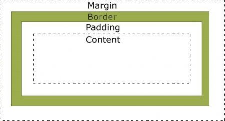
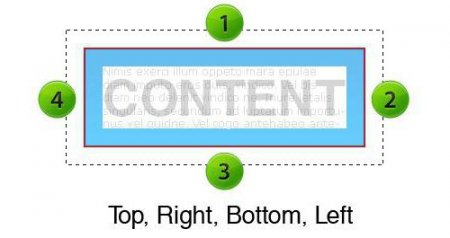
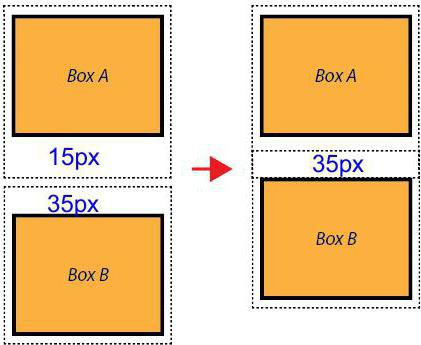
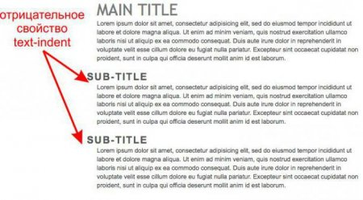

Шпаргалка: як зробити відступ тексту CSS
Веб-ресурс оцінюється користувачами за його зовнішньої привабливості. Тому навіть інформаційно корисний текст може бути прочитаний з-за того, що він неякісно оформлений. Висновок – потрібно ретельно і уважно підходити не тільки до смислового змісту сторінок сайту, але і до його візуальному представленню. Поява технології CSS розширило можливості створення привабливих статей. Одне з властивостей, призначених для полегшення сприйняття написаного – відступ тексту CSS.
Поля і відступи: в чому різниця?
Перш ніж починати форматувати текст, слід розібратися, що таке поля і відступи. Незважаючи на те, що ці елементи розмітки в ряді випадків виглядають для користувача однаково, між ними існують принципові відмінності:
поле задається властивістю padding , відступ – margin ; поле визначається проміжком між вмістом і кордоном блоку, відступ між кордонами сусідніх блоків; поля можуть враховуватися в розмірах елемента (ширині і висоті), так і немає.
Властивість margin
Отже, щоб задати горизонтальний або вертикальний відступ тексту CSS, використовують конструкцію margin . Ця властивість застосовується до тегу задаючого абзац документа. У найпростішому випадку воно записується як: margin: 12px. Така рядок означає, що навколо блоку тексту (або будь-якого іншого блоку) з усіх сторін буде зроблено відступ 12 пікселів. Щоб збільшити проміжок, наприклад, у три рази, достатньо записати: margin: 36px. Але що робити, якщо інтервал між блоками повинен бути різний з кожної сторони? Розробники веб-сторінок використовують кілька форм запису: margin: 11px 22px. margin: 11px 22px 33px. margin: 11px 22px 33px 44px. У першому прикладі від нижньої і верхньої меж блоку будуть зроблені відступи по 11 пікселів, з боків блоку – по 22 пікселя. Відповідно до другої формі запису, між верхнім краєм блоку і контентом буде 11 пікселів, між нижнім – 33 пікселя, з боків – по 22 пікселя. У третьому випадку відступ тексту CSS буде мати значення 11 пікселів зверху, 22 пікселя праворуч, 33 пікселя знизу і 44 пікселя ліворуч.
Також доступна можливість запису відстані до межі блоку тільки з одного боку: margin-top margin-bottom, margin-left, margin-right . Перевівши назви властивостей на російську мову, нескладно здогадатися про їх призначення. Наприклад, такий запис говорить про те, що відступ праворуч буде дорівнює 22 пікселя: margin-right: 22рх. Для решти сторін відстані навколо блоку приймаються рівними значенням елемента-батька. Властивість margin має особливість, яку повинен пам'ятати розробник, коли використовує відступ тексту CSS по вертикалі. Інтервали сусідніх елементів не підсумовуються, а накладаються один на одного. Наприклад, нехай один із блоків має margin-bottom: 15px , а примикає до нього знизу блок margin-top: 35px . Шкільна арифметика і здоровий глузд підказують, що загальний відступ між ними буде 50 пікселів. На практиці це не так. Блок з великим значенням властивості margin «поглине» свого сусіда. У підсумку інтервал між елементами 35 пікселів.
«Червона» рядок
Оформляючи документ в текстовому редакторі, користувачі воліють ставити кожен новий абзац з допомогою «червоної» рядка. З допомогою CSS відступ тексту зліва нескладно зробити – використовується конструкція text-indent . Записується вона так: text-indent: 11px. Тобто перший рядок абзацу буде зсунута відносного лівого краю на 11 пікселів. Щоб текст на веб-сторінці більше скидався на документ у редакторі, потрібно додатково встановити вирівнювання по ширині, тобто записати: text-indent: 11px; text-align: justify. Крім пікселів, при описі розмітки допускається використання інших одиниць – дюймів, пунктів, відсотків. Нехай блок має відступ тексту CSS, рівний 10%. При ширині блоку, рівної 500 пікселям, червона рядок буде становити 50 пікселів (10% від 500).
Для цієї властивості може бути виставлено значення inherit . Такий запис говорить, що блок використовує аналогічну властивість батьківського блоку. text-indent: inherit. Дивно, але абзацний відступ може приймати негативні значення! У цьому випадку формуються так звані виступи, тобто основний текст залишається на місці, а перший рядок зміщується вліво на 22 пікселя: text-indent: -22px. Щоб букви не перейшли за ліву межу браузера, додатково до text-indent потрібно використовувати конструкцію для завдання поля: padding-left: 22px.
Корисні рекомендації
Основні властивості CSS для форматування тексту розглянуті. А закріпити їх допоможе практика. Ось кілька заключних порад, як застосовувати вивчений матеріал при розробці веб-сайтів: червона рядок і відступ тексту – різні поняття, і для їх вказівки використовуються різні властивості; для вертикальних відступів правила математики не діють – інтервали накладаються, «перемагає» елемент з великим значенням; негативний абзацний відступ використовують, щоб вказати перший рядок абзацу за допомогою зображення.